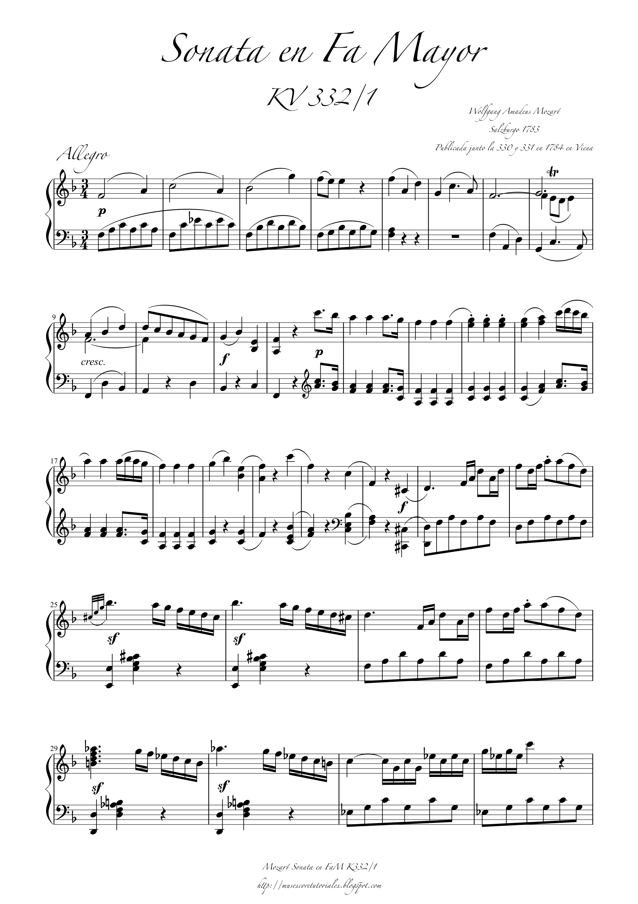

A text-based representation that combines symbolic score structure with time-aligned performance data — designed for frontier language models.
No existing representation unifies both in an LLM-readable format.

Music Notation for Language Models
Verbose · Compact · Minimal · Beats
timestamps
exact onset–offset per note
velocities
MIDI velocity per note
score
voice, slur, dynamics, key, tempo
| Piece | Composer | Qs |
|---|---|---|
| Gnomus | Mussorgsky | 10 |
| Reflets dans l'eau | Debussy | 10 |
| Waldstein Sonata | Beethoven | 10 |
| Prelude Op.23 No.4 | Rachmaninoff | 10 |
| Sonata K.332 | Mozart | 10 |
Harmony, form, melody, rhythm, texture, articulation — answerable from the score alone.
Timestamp localization, expressive events — require time-aligned performance data.
Scored by exact match after normalization. Multi-phrasing supported via pipe-separated alternatives.
| Format | Claude Opus 4.7 | GPT-5.5 | Gemini 3.1 Pro | Qwen 3.6 Plus | Avg EM |
|---|---|---|---|---|---|
| MuNo-LM Minimal | 52% | 80% | 86% | 64% | 66.4% |
| MuNo-LM Compact | 44% | 86% | 94% | 58% | 66.8% |
| MuNo-LM Verbose | 52% | 88% | 88% | 50% | 66.6% |
| MuNo-LM Beats | 46% | 84% | 88% | 58% | 65.2% |
| ABC | 16% | 80% | 64% | 25% | 43.6% |
| XML Stripped | 26% | 82% | 88% | 40% | 56.8% |
| None (title only) | 7% | 9% | 16% | 7% | 9.75% |
All four MuNo variants beat ABC and XML baselines across all four models.
Compact best for Gemini (94%), Verbose best for GPT-5.5 (88%). No single format dominates.
Highest average EM (66.8%) at only 15% of XML token cost. Beats adds overhead without gain.
Measured with tiktoken cl100k_base. Waldstein Sonata non-stripped XML exceeds 1M tokens — out of reach for all tested models.
(n)ASAP: 1,067 recordings, 236 scores. Note-level alignment via DTW.
MIDI timing + velocity merged into MusicXML → MuNo-LM.
Stage 1: GPT-5.5 / Gemini generate time-grounded auditory analyses.
Stage 2: Claude Sonnet converts to verified QA pairs.
Output: short-form, timestamp-anchored QA pairs — verifiable by exact match.
The piece opens in near-silence at 00:00.00 with a low D2 beginning a long, blurred arpeggiated resonance. D2, A3, D4, A4, D4, A3, F♯3, A2, and D4 are released into one sustained pedal-like wash through 00:04.22. At 00:07.35 it thins further, preparing the first melodic entrance.
At 00:08.18 the melody appears clearly on F♯4, held over a quiet continuation of the D-based arpeggiation.
"A clear melodic statement projects above a still-soft arpeggiated D harmony for the first time. At what timestamp does this melodic note first appear?"
00:08.18
Musicians with formal training confirmed questions are unambiguous and temporal anchors are precise enough to locate the event by listening. Low Perception Index confirms answers require genuine audio perception.
MuNo-LM unifies score semantics and time-aligned performance data at 15% of XML token cost, outperforming ABC and MusicXML across four frontier models.
Automated, scalable caption generation from (n)ASAP score-MIDI-audio triples → time-grounded, musically informed QA pairs.
Teaching audio-language models to listen to music with the depth of understanding a trained musician brings to a performance.